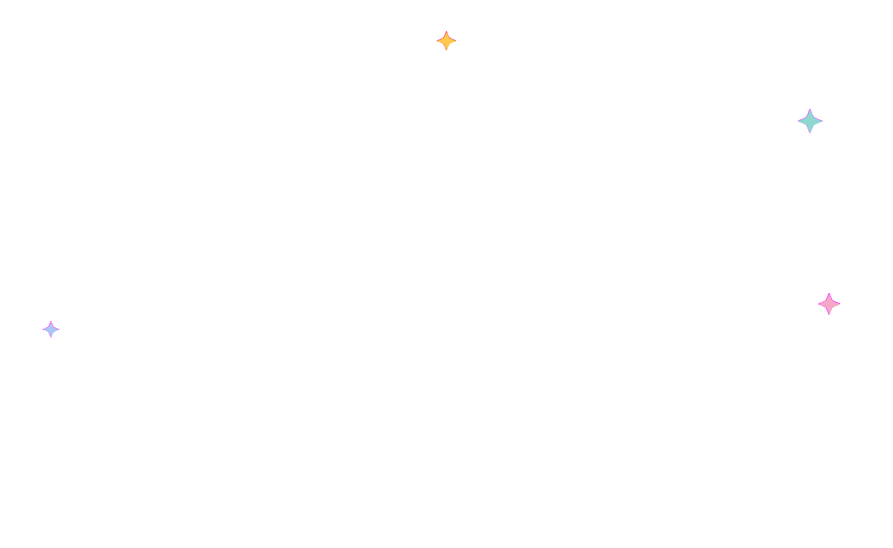

Designing a Guided Transition to a New Platform
After a major redesign unified multiple histocompatibility assays into one platform, our team needed a way to help users transition confidently to the new experience.
The training needed to support experienced lab professionals while staying approachable for new users, helping them understand both what changed and why.
Because the software supports complex transplantation workflows, the experience had to simplify highly technical concepts without losing accuracy. The result was a modular learning system that made onboarding more intuitive and scalable for an international audience.
This wasn't simply a product walkthrough
The redesigned platform combined multiple tools and workflows into one cohesive application, introducing entirely new ways of completing familiar tasks. Many long-time users were transitioning from fragmented processes spread across several applications to a single, holistic workflow centered around the patient.
Success depended on close collaboration across disciplines.
Partnering closely with subject-matter experts, product managers, and engineers, I designed an in-application training layer. Contextual guidance cards paired with on-screen spotlights walk users through realistic laboratory scenarios, while a modular chapter structure lets people learn at their own pace and return exactly where they left off.

Tools and team.
Aligning on scope, then mapping the task flows.
The kickoff aligned the design team with Werfen's subject-matter experts on a single goal: build the first hands-on introduction to the new MatchX software as part of the Technical Training Module. The tool needed to serve technologists and customers, sales reps, and technical support — walking each through the platform's structure and letting them complete realistic mock-tasks in a live demo UI.
Working from real lab data provided by the SMEs, we mapped the experience into three scenario tracks — then sequenced results from the least to most complex so users build confidence before tackling edge cases.

Understanding how labs learn today.
Discovery centered on how histocompatibility labs currently learn and train — the methods teams rely on, the gaps in existing training, and what they expected from a demo tool. These conversations set the requirements for a self-paced, scenario-driven experience grounded in real laboratory work.

Showing people what's new — and where the old still lives.
Defining the training meant talking directly with stakeholders, clients, and subject matter experts — in labs and at conferences — to understand what actually needed explaining. The unified platform introduced brand-new tools and newly integrated third-party APIs, but it also carried over familiar functionality that technologists needed to relocate. On top of that, every lab configures and customizes the software differently, so the training had to speak to both the new capabilities and the flexibility to make the tool your own.
The features that guide every user through it.

Main Navigation
A navigation that helps users pick up right where they left off and tracks progress through the module.
Scenario Navigation
Move between scenario tracks at your own pace, jumping back to an earlier one whenever needed.
Interactive Elements
Hands-on checkpoints that ask users to complete each action themselves before moving on.

Spot Highlights
Spotlights that focus attention on the exact part of the screen a step is talking about.

What's New
A visual legend introduced up front to walk users through the elements that are completely new to the software.
Testing & handoff.
The final experience is organized into modular chapters — Basic Overview, Create a Batch, Assays, and Patient View — each with its own topics and progress tracking, so labs can onboard new staff and cross-train at their own pace.
The impact this work delivered.
The tool is widely used today. It's currently training technicians out in the field, and sales reps use it to showcase the platform's new tools, integrated APIs, and workflows to prospective customers. Testing also validated the scenario structure itself — two scenarios per assay module turned out to be the right number, giving users enough range to build confidence without overloading any single module.
"Beautiful work — straightforward, nice flow, and easy to use."